- 00 开篇词 为什么中间件对分布式架构体系来说这么重要？.md.html
- 01 中间件生态（上）：有哪些类型的中间件？.md.html
- 02 中间件生态（下）：同类型的中间件如何进行选型？.md.html
- 03 数组与链表：存储设计的基石有哪些？.md.html
- 04 红黑树：图解红黑树的构造过程与应用场景.md.html
- 05 多线程：多线程编程有哪些常见的设计模式？.md.html
- 06 锁：如何理解锁的同步阻塞队列与条件队列？.md.html
- 07 NIO：手撸一个简易的主从多Reactor线程模型.md.html
- 08 Netty：如何优雅地处理网络读写，制定网络通信协议？.md.html
- 08 加餐 中间件底层的通用设计理念.md.html
- 09 技术选型：如何选择微服务框架和注册中心？.md.html
- 10 设计原理：Dubbo核心设计原理剖析.md.html
- 11 案例：如何基于Dubbo进行网关设计？.md.html
- 12 案例：如何实现蓝绿发布？.md.html
- 13 技术选型：如何根据应用场景选择合适的消息中间件？.md.html
- 14 性能之道：RocketMQ与Kafka高性能设计对比.md.html
- 15 案例：消息中间件如何实现蓝绿？.md.html
- 16 案例：如何提升RocketMQ顺序消费性能？.md.html
- 17 运维：如何运维日均亿级的消息集群？.md.html
- 18 案例：如何排查RocketMQ消息发送超时故障？.md.html
- 19 案例：如何排查RocketMQ消息消费积压问题？.md.html
- 20 技术选型：分布式定时调度框架的功能和未来.md.html
- 21 设计理念：如何基于ZooKeeper设计准实时架构？.md.html
- 22 案例：使用分布式调度框架该考虑哪些问题？.md.html
- 23 案例：如何在生产环境进行全链路压测？.md.html
- 大咖助阵 高楼：我们应该如何学习中间件？.md.html
- 用户故事 学而时习之，不亦乐乎.md.html
- 用户故事 愿做技术的追梦人.md.html
- 用户故事 浪费时间也是为了珍惜时间.md.html
- 结束语 坚持不懈，越努力越幸运.md.html
- 捐赠
04 红黑树：图解红黑树的构造过程与应用场景
你好，我是丁威。
这节课，我们继续 Java 中常用数据结构的讲解。我会重点介绍 TreeMap、LinkedHashMap 和 PriorityQueue 这三种数据结构。
TreeMap
先来看 TreeMap。TreeMap 的底层数据结构是一棵红黑树，这是一种比较复杂但也非常重要的数据结构。它是由树这种基础的数据结构演化而来的。
我们知道，在计算机领域，树指的就是具有树状结构的数据的集合。把它叫做“树”，是因为它看起来像一棵自上而下倒挂的树。一棵树通常有下面几个特点：
每个节点都只有有限个子节点或无子节点；
没有父节点的节点称为根节点；
每一个非根节点有且只有一个父节点；
除了根节点外，每个子节点可以分为多个不相交的子树；
树里面没有环路（cycle）。
如果一棵树的每个节点最多有两个子树，那它就是一棵二叉树。二叉树是“树”的一个重要分支，我们可以通过文稿中这张图来直观感受一下：
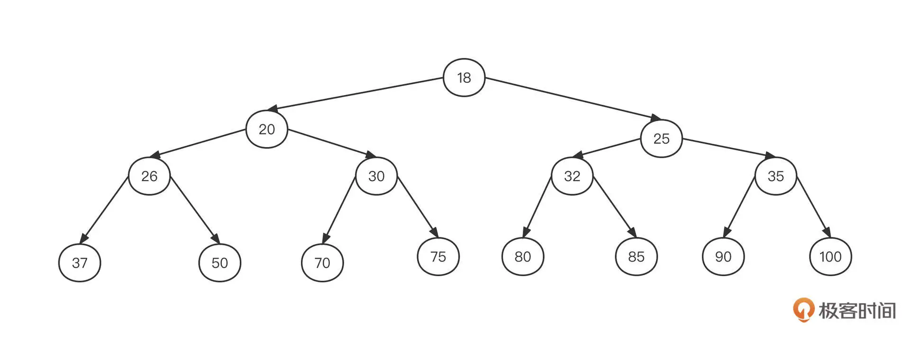
但是如果数据按照这样的结构存储，想要新增或者查找数据就需要沿着根节点去遍历所有的节点，这时的效率为 O(n)，可以看出性能非常低下。作为数据结构的设计者，肯定不能让这样的事情发生。
这时候，我们就需要对数据进行排序了，也就是使用所谓的二叉排序树（二叉查找树）。它有下面几个特点：
若任意节点的左子树不为空，则左子树上所有节点的值均小于它的根节点的值；
若任意节点的右子树不为空，则右子树上所有节点的值均大于它的根节点的值；
没有键值相等的节点。
如果上图这棵二叉树变成一棵二叉排序树，可能长成下面这个样子：
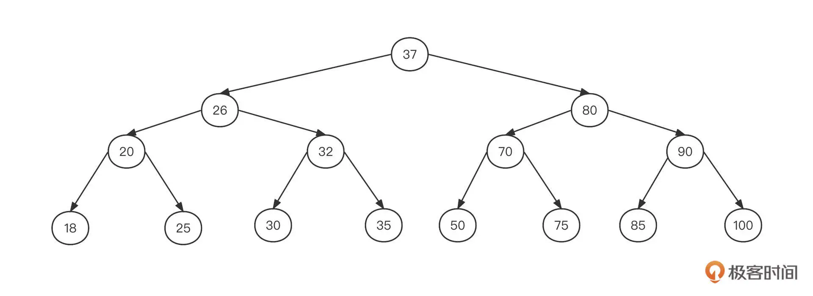
基于排序后的数据存储结构，我们来尝试一下查找数字 30：
从根节点 37 开始查找，判断出 37 比 30 大，然后尝试从 37 的左子树继续查找；
37 的左子节点为 26，判断出 26 比 30 小，所以需要从 26 的右子树继续查找；
26 的右子节点为 32，由于 32 比 30 大，所以从 32 的左子树继续查找；
32 的左子节点为 30，命中，结束。
你应该已经发现了，每次查找，都可以排除掉一半的数据。我们可以将它类比作二分查找算法，其时间复杂度为 O(logN)，也就是对数级。所以说，二叉排序树是一种比较高效的查找算法。
不过，二叉排序树也有缺陷。一个最主要的问题就是，在查找之前我们需要按照二叉排序树的存储特点来构建它。我们还是用上面这个例子，将节点按照从小到大的顺序构建二叉排序树，构建过程如下图所示：
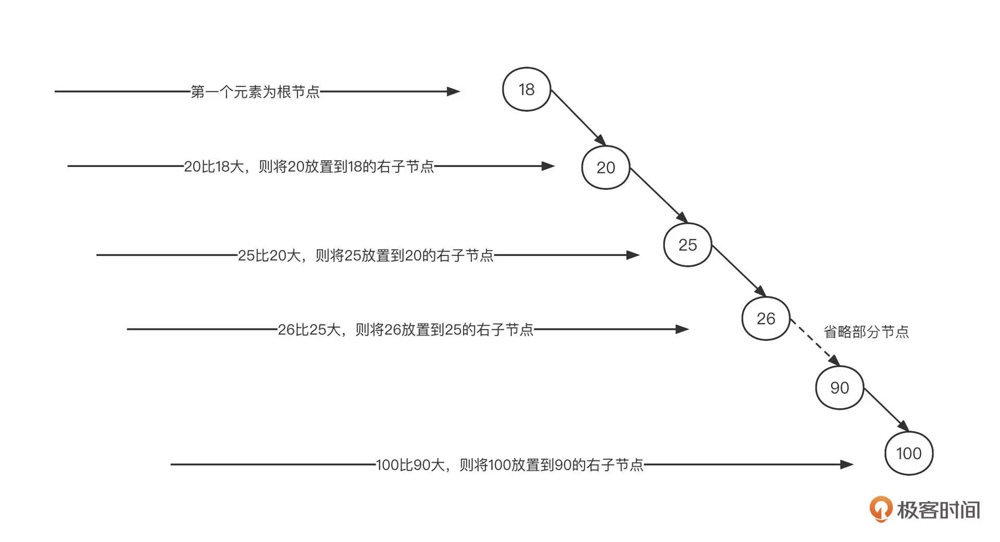
根据排序二叉树的构建规则，如果数据本身是顺序的，那么二叉排序树会退化成单链表，时间复杂度飙升到 O(n)，我们显然不能接受这种情况。
对比这两棵二叉排序树，第一棵左右子树比较对称，两边基本能保持平衡，但第二棵严重地向右边倾斜，这会导致每遍历新的一层，都无法有效过滤一半的数据，也就意味着性能的下降。
那有没有一种办法能够自动调整二叉排序树的平衡呢？这就是红黑树要解决的问题了。
红黑树是一种每个节点都带有颜色属性（红色或黑色）的二叉查找树，它可以实现树的自平衡，查找、插入和删除节点的时间复杂度都为 O(logn)。
除了要具备二叉排序树的特征外，红黑树还必须具备下面五个特性。
性质 1：节点是红色或黑色。
性质 2：根是黑色。
性质 3：所有叶子都是黑色（叶子是 NIL 节点）。
性质 4：每个红色节点必须有两个黑色的子节点。也就是说，从每个叶子到根的所有路径上不能有两个连续的红色节点。
性质 5：从任一节点到其每个叶子的所有简单路径都包含相同数目的黑色节点。
由于插入、删除节点都有可能破坏红黑树的这些特性，所以我们需要进行一些操作，也就是通过树的旋转让它重新满足这些特点。
树的旋转又分为右旋和左旋两种：右旋指的是旋转后需要改变支点节点的右子树，左旋指的是旋转后需要改变支点节点的左节点。 这个通过旋转重新满足特性的过程就是自平衡。树越平衡，数据的查找效率越高。
为了让你直观地看到“红黑树的魅力”，我们还是沿用上面的例子，将节点按照从小到大的顺序依次插入到一棵红黑树中，最终产生的红黑树为如下图所示：
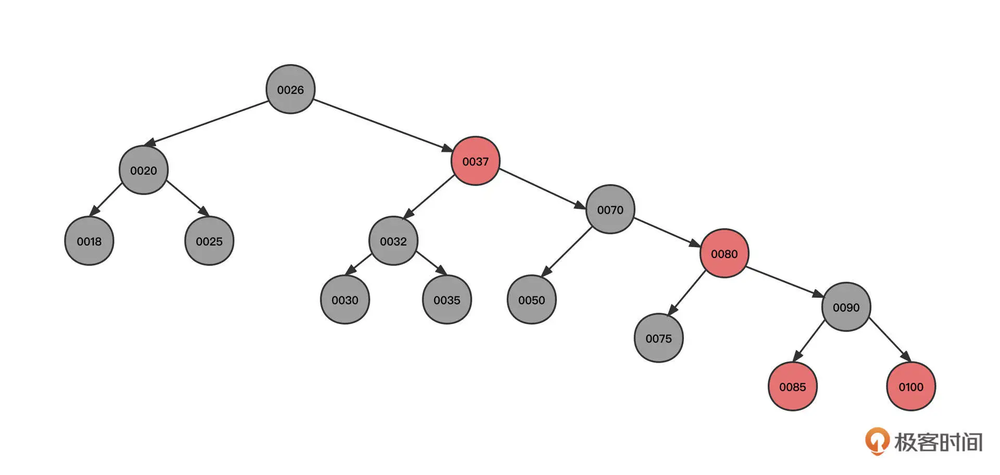
这是一棵地地道道的二叉排序树。
但是我们刚才说，在查找元素时，时间复杂度从 O(n) 飙升到了 O(logN)，这棵树是如何做到节点顺序插入时没有退化成链表的呢？我们一起来看下红黑树的构建过程。
提前说明一下，由于从小到大排序是一种特殊情况，不能覆盖建构红黑树的多种情况，所以为了更好地说明红黑树的工作机制，我们把节点的插入顺序变更为 50、37、70、35、25、30、26、80、90、100、20、18、32、75、85。
1. 按照这个顺序，首先我们连续插入节点 50、节点 37、节点 70，其初始状态如下图所示：
2. 然后，继续插入节点 35：
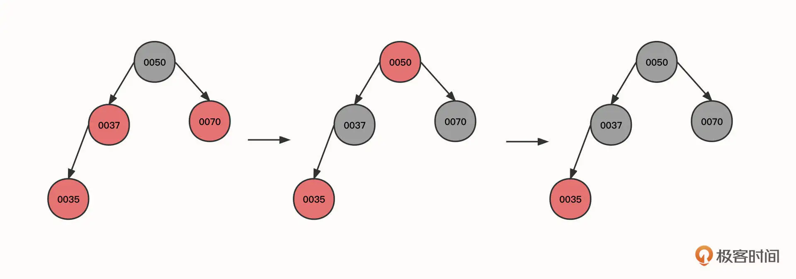
这个时候，新插入的节点 0035 的父节点 (00037) 和叔叔节点 (0070) 都是红色，所以我们需要将 0035 的祖父节点的颜色传递到它的两个子节点，这样也就到了图里的第二个状态。由于根节点的颜色为红色，不符合红黑树的特点，我们再将根节点的颜色变更为黑色。
3. 继续插入节点 25：
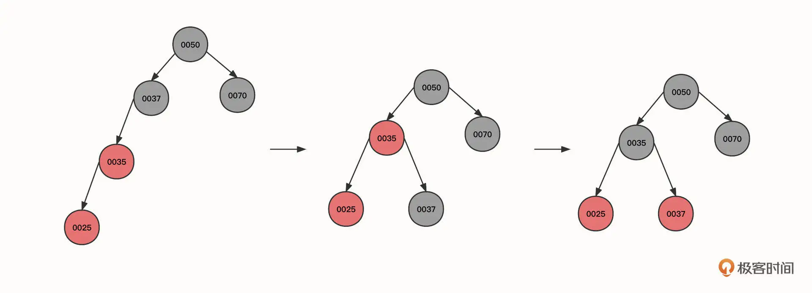
可以看到，初始状态的当前节点、父节点和祖先节点的形状为一条斜线。这时红色节点 0025 与 0035 都是红色，违背了红黑树的性质 4，这种情况可以使用右旋来解决，具体操作是：
让当前节点 (0025) 的祖先节点 (0037) 下沉，作为当前节点的父节点 (0035) 的右子节点。同时，当前父节点（0025）的祖先节点（0050）的左节点指向当前节点的父节点，这样，0050 的左节点就直接指向了 0035。本轮操作后变成图里的第二个状态。
旋转之后 0035 节点的右子树路径多了一个黑色的节点 0037，为了符合红黑树的特性，我们需要将 0037 父节点的颜色进行翻转，变成图里的第三个状态。
总结一下，右旋的第一个触发条件：当前节点与父亲节点为红色，并且都是左节点。
4. 继续插入节点 30：
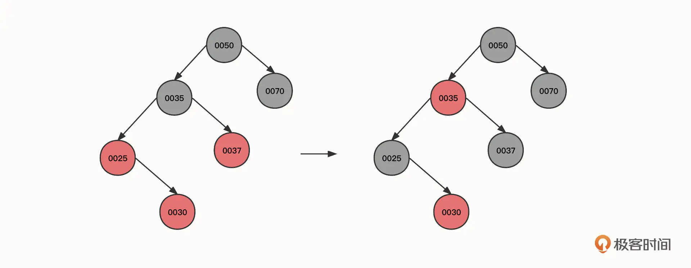
当前节点 (0030)、父节点 (0025) 和叔叔节点 (0037) 都为红色，所以可以将当前节点的祖先 (0035) 的状态传递给子节点，变成上图第二个状态。
5. 继续插入节点 26：
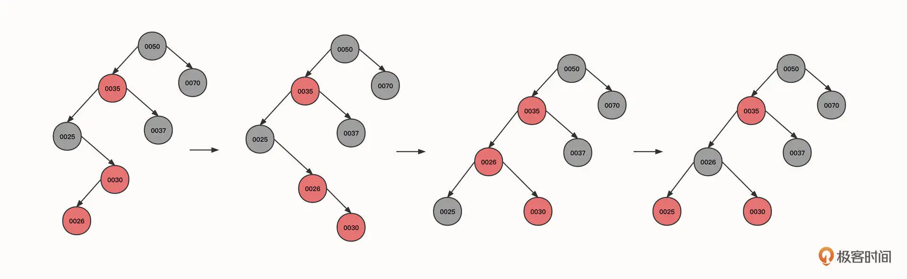
可以看到，现在的状态是，当前节点 (0026) 和父节点 (0030) 为红色，当前节点为左子树，父节点为右子树，并且叔叔节点并不为红色（组成一个大于号）。
这时候我们也需要右旋，以当前节点为支点，将其父节点作为当前节点的右节点，当前节点重新充当其祖父节点的右节点，状态从图一转为图二。
这是右旋的第二个触发条件：当前节点、父节点、祖父节点的形状为大于号，而且当前节点的父节点为支点。
状态变为图二之后，当前节点 (0030) 与父节点 (0026) 都是红色，并且都是右节点，所以应该执行一次左旋。以父节点 0026 为支点，将当前节点（0030）的祖父节点（0025）变为父节点（0026）的左子节点，经过这个动作后，状态从图二转为图三。
左旋之后，黑色节点 0025 变成了节点 0026 的左子树，左子树的黑色节点数量变多，所以我们需要将黑色传递到父节点，也就是要把节点 0025 变为红色，0026 变为黑色，变成图中的第四个状态。
6. 我们接着插入节点 80，此时不会改变红黑色特性，再插入节点 90：
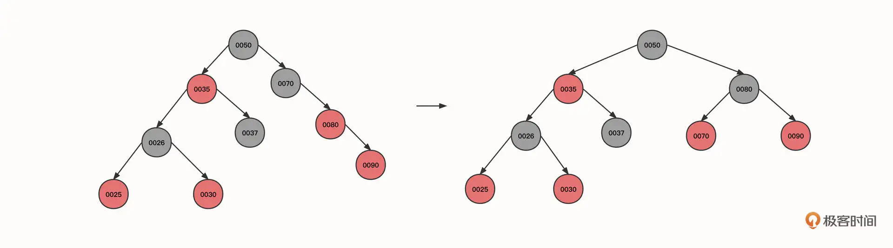
由于当前节点与父节点都是红色，并且都是右节点，需要执行左旋。
其实，到底什么时候需要左旋，什么时候需要右旋你没有必要死记硬背。因为左旋、右旋的最终目的是要满足树的平衡，也就是降低树的层级。只要确保旋转后的最终效果满足二叉排序树的定义（根节点比左子树大，比右子数小）就可以了。
7. 继续插入节点 100、20：
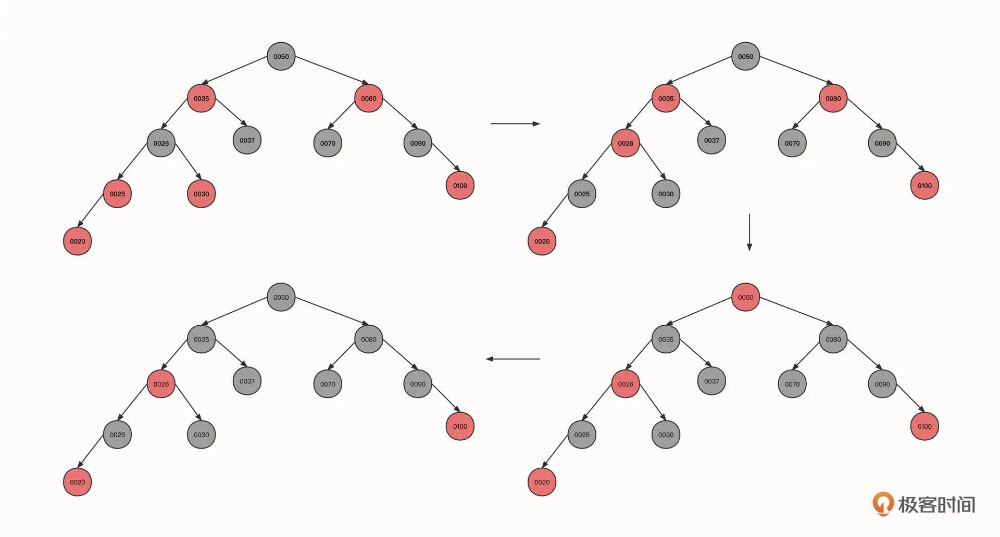
到这里我们就需要说明一下了。
这一步和步骤 2 一样，当前节点、父节点和叔叔节点都是红色，只需要将当前节点的祖父节点的颜色传递到祖父节点的两个子节点就可以了，这就到了图中的第二个状态。
但这个时候，0026 和它的父节点 0035 同为红色，并且叔叔节点也是红色，我们需要再像上面一样传递颜色，调整后变成图里的第三个状态。
最后，由于根节点是红色，我们需要将根节点转为黑色。
这里重点强调的是，无论是左旋、右旋还是变色，都需要再次向上递归进行验证。
8. 继续插入 18、32、75、85 等节点：
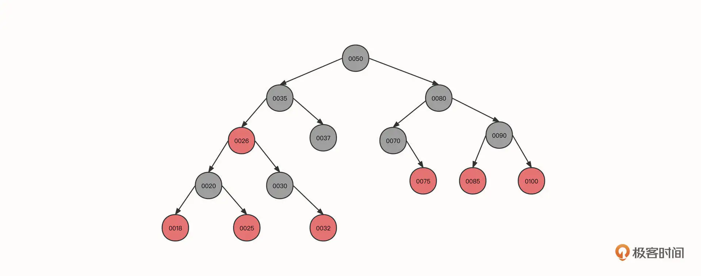
到这一步基本没有什么新的知识点了，按照我们前面所讲过的方法进行调整，就可以得到上面这棵红黑树了。
红黑树的构建过程就介绍到这里。红黑树的主要过程就是通过为节点引入颜色、左旋、右旋、变色等手段实现树的平衡，保证查询功能高效有序进行。
聊完数据结构，我们再来看看它的应用。其实，TreeMap 在中间件开发领域的运用非常广泛，其中最出名的估计要属使用 TreeMap 实现一致性哈希算法了。
下面是一致性哈希算法的示意图：
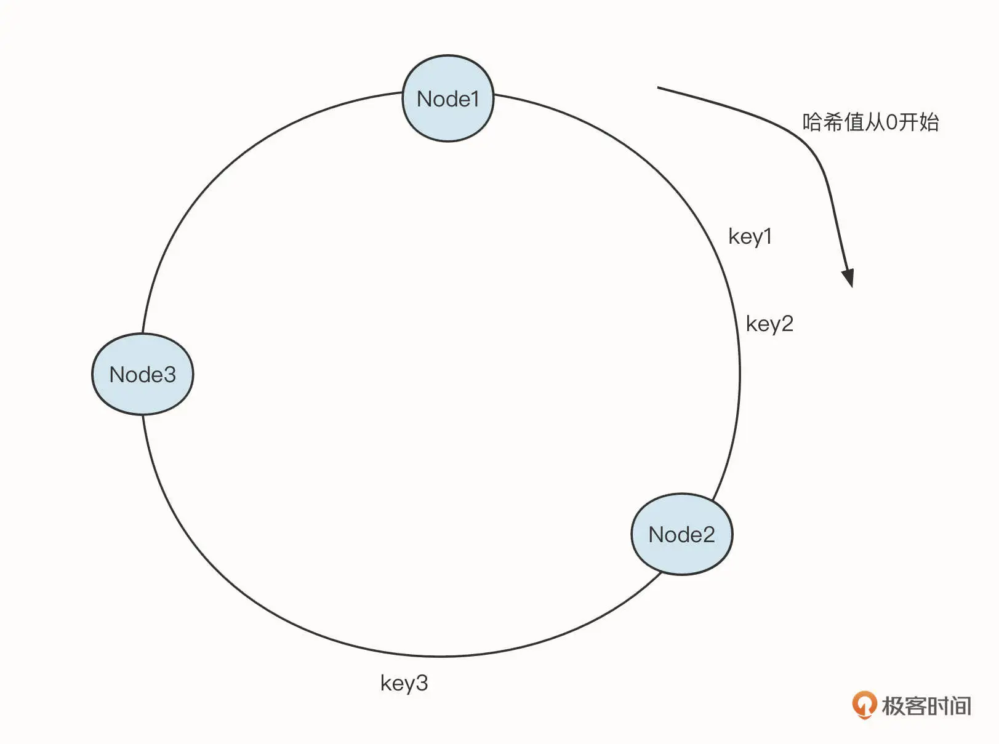
其中，Node1、Node2、Node3 是真实存储的有效数据，每一个节点需要存储一些关联信息，很适合 key-value 的存储形式。一致性哈希算法的查询规则是：查询第一个大于目标哈希值的节点。
例如，如果输入 key1，key2，需要命中 Node2，如果输入 key3，则需要命中 Node3。
这种情况其实就是需要将数据按照 key 进行排序，而 TreeMap 中的数据本身就是顺序的，所以非常适合这个场景。
在 RocketMQ 中，就使用了一致性哈希算法来实现消费组队列的负载均衡。
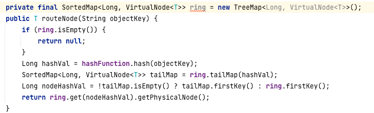
TreeMap 的 TailMap 是返回大于等于 key 的子树，然后调用子树的 firstKey 获取 TreeMap 中最小的元素，符合一致性哈希算法的命中规则。又因为 TreeMap 是一棵排序树，所以得到最小、最大值会非常容易。
在 TreeMap 中实现 firstkey 方法时，内部会先获取 TreeMap 中的键值对，也就是 Entry 对象：
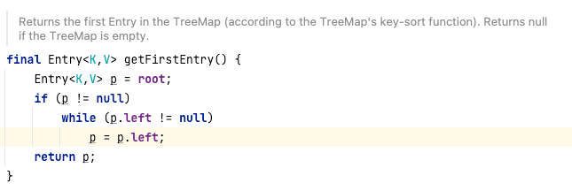
然后从根节点开始遍历，查找到节点的左子树，再一直遍历到树的最后一个左节点，时间复杂度为 O(logN)。
LinkedHashMap
红黑树就介绍到这里了，接下来我们再来看一个与 LRU 相关的数据结构 LinkedHashMap。
LinkedHashMap 是 LinkedList 和 HashMap 的结合体，它内部的存储结构可以简单表示为下面这样：
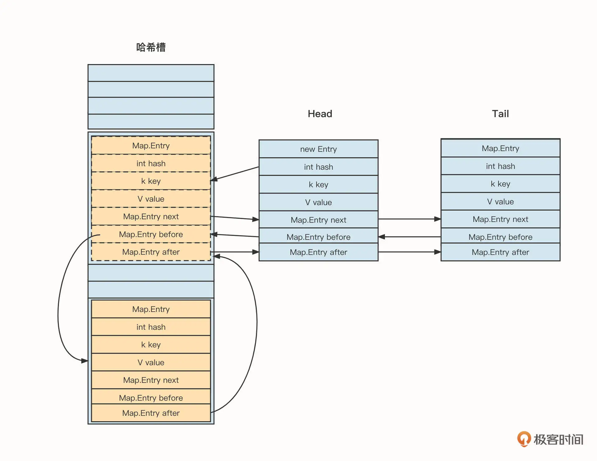
LinkedHashMap 内部存储的 Entry 在 HashMap 的基础上增加了两个指针：before 和 after。这两个节点可以对插入的节点进行链接，以此来维护顺序性。同时，链表结构为了方便插入，也会持有“头尾节点”这两个指针。
那引入链表有什么好处呢？
我认为大概有下面两个优点。
一个是降低了遍历实现的复杂度。我们对比一下，HashMap 的遍历是首先遍历哈希槽，然后遍历链表；但 LinkedHashMap 则可以基于头节点遍历，复杂度明显降低。引入链表的第二个优点则是提供了顺序性。接下来，我们就来看看 LinkedHashMap 的顺序性和使用场景。
LinkedHashMap 提供了两种顺序性机制：
按节点插入顺序，是 LinkedHashMap 的默认行为；
按节点的访问性顺序，最新访问的节点将被放到链表的末尾。
它的使用场景也很常见，有一种知名的淘汰算法叫 LRU。顾名思义，LRU 就是要淘汰最近没有使用的数据。在 Java 领域，实现 LRU 的首选就是 LinkedHashMap，因为 LinkedHashMap 能够按访问性排序。
在 LinkedHashMap 中，如果顺行性机制选择“按访问顺序”，那么当元素被访问时，元素会默认被放到链表的尾部，并且在向 LinkedHashMap 添加元素时会调用 afterNodeInsertion 方法。这个方法的具体实现代码如下：
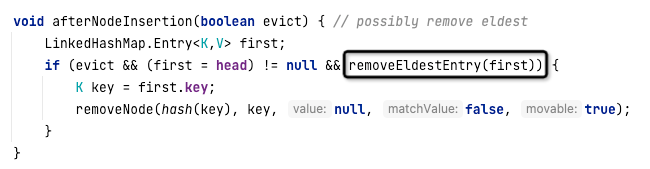
从代码中可以看出，如果 removeEldestEntry 函数返回 true，则会删除 LinkedHashMap 中的第一个元素，这样就淘汰了旧的数据，实现了 LRU 的效果。removeEledestEntry 方法的代码如下：
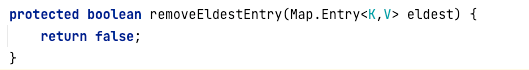
可以看到，默认返回的是 false，表示 LinkedHashMap 并不会启用节点的淘汰机制。为了实现 LRU 算法，我们需要继承 LinkedHashMap 并重写该方法，具体实现代码如下：
package net.codingw.datastruct;
import java.util.LinkedHashMap;
import java.util.Map;
public class LRUCache<K,V> extends LinkedHashMap<K,V> {
private int maxCapacity;
protected boolean removeEldestEntry(Map.Entry<K,V> eldest) {
//如果超过了最大容量，则启动剔除机制
return size() >= maxCapacity;
}
public void setMaxCapacity(int maxCapacity) {
this.maxCapacity = maxCapacity;
}
}
LinkedHashMap 就介绍到这里了，我们再来看一种特殊的队列——优先级队列，它是实现定时调度的核心数据结构。
PriorityQueue
我们知道，普通队列都是先进先出的，但优先级队列不同，它可以为元素设置优先级，优先级高的元素完全可以后进先出。
我们先来看一下 PriorityQueue 的类图：
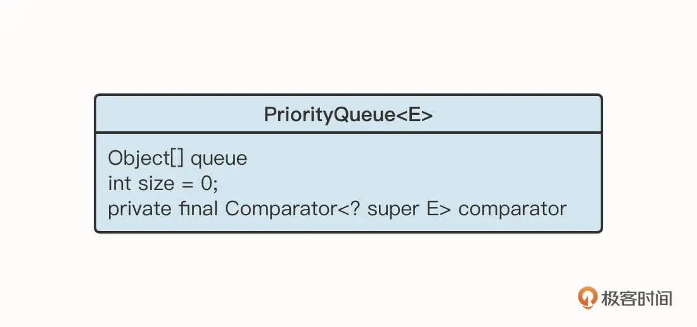
优先级队列的底层结构是数组，可是怎么在数组的基础上排列优先级呢？原来，PriorityQueue 的底层是基于最小堆实现的堆排序。
所谓最小堆指的是一棵经过排序的完全二叉树，根结点的键值是所有堆结点键值中最小者。无论是最大堆还是最小堆，都只固定根节点与子节点的关系，两个子节点之间的关系并不做强制要求。
我们采用数组作为最小堆的底层数据结构，将最小堆用一棵二叉树来表示，这时的数据是按照从上到下、从左到右的方式依次存储在数组中的：
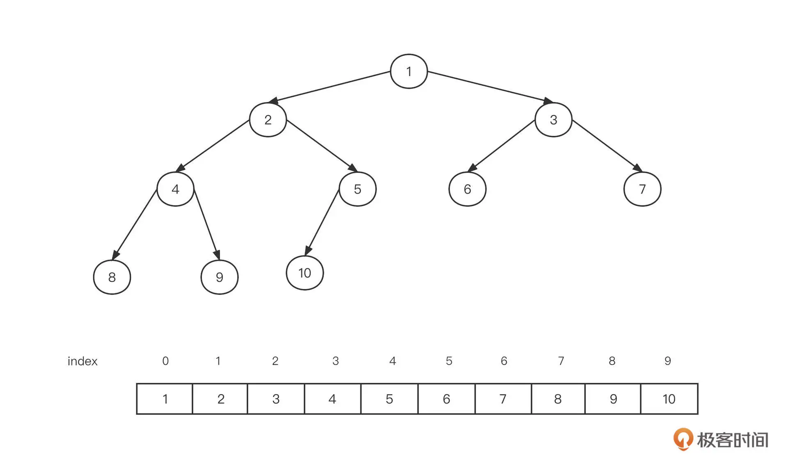
这种存储方式有两个特点：
假设一个节点在数组中的下标为 n，则它的左子节点的下标为 2n+1，它的右子节点的下标为 2n+2；
假设一个节点在数组中的下标为 n，那么它的父节点下标为 (n -1) >>> 1。
有些最小堆的存储方式是将数组的第一个元素空出来，把根节点存储在下标为 1 的位置。如果基于这种方式，存储有下面两个特点：
假设一个节点在数组中的下标为 n，则它的左子节点的下标为 2n，它的右子节点的下标为 2n+1；
假设一个节点在数组中的下标为 n，则它的父节点下标为 (n) >>> 1。
但在实践场景中，数据不可能按顺序插入，既然如此，要实现优先级队列，该怎么对这棵树进行排序呢？
PriorityQueue 队列的实现中采用了堆排序。我们还是用图解的方式来看一下构建规则。
首先我们连续插入节点 500，600，700，800，其内部结构如下图所示：
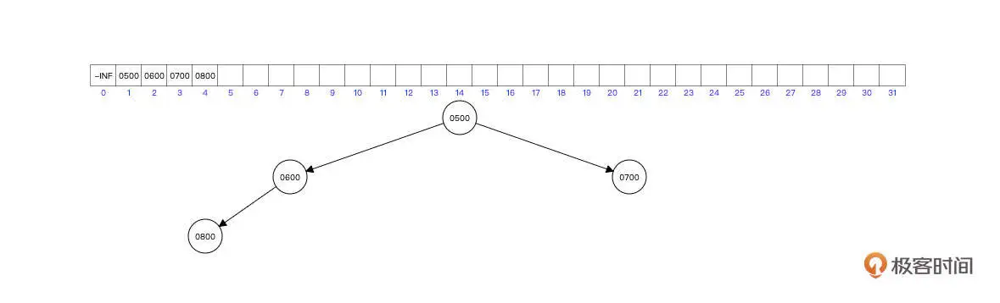
由于首先插入了根节点为 500，后续 600，700 比根节点都小，所以 600 和 700 可以直接成为根节点的左右子树。
继续插入 800，由于比根节点大，同时比 600 大，则直接放入到 600 的子节点即可。
继续插入 490，插入过程如下图所示：
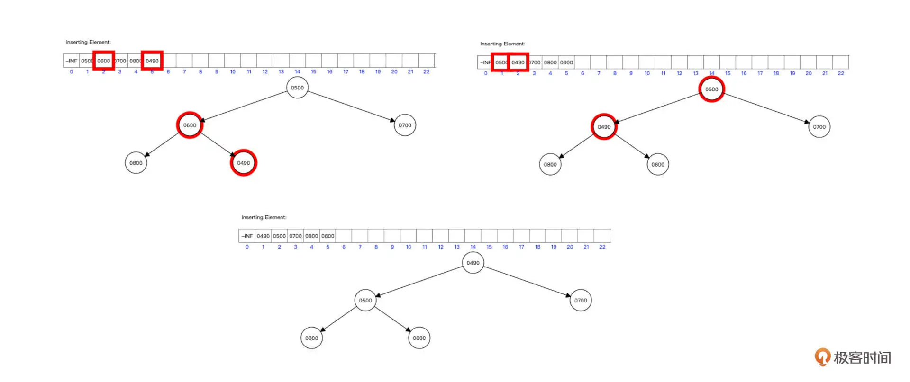
解释一下。我们首先将新元素插入到数组的最后，下标为 n=5，队列是图中的第一个状态。
根据公式 n >>> 1 ，可以算出它的父节点的下标为 2，比较两者的大小，如果新插入的节点比父节点少，那么交换两者的值，变化到图中的第二个状态。
这时候，我们再通过公式 n>>>1 算出父节点的下标为 1，比较两者的值，发现子节点的值比父节点的值低，则继续交换两者的值，成为图中的第三个状态。
要实现上面的步骤，我们相应的代码是：
private void siftUp(int k, E x) {
if (comparator != null)
siftUpUsingComparator(k, x);
else
siftUpComparable(k, x);
}
@SuppressWarnings("unchecked")
private void siftUpComparable(int k, E x) {
Comparable<? super E> key = (Comparable<? super E>) x;
while (k > 0) {
int parent = (k - 1) >>> 1;
Object e = queue[parent];
if (key.compareTo((E) e) >= 0)
break;
queue[k] = e;
k = parent;
}
queue[k] = key;
}
在这段代码里，我们首先使用 while(k>0) 实现递归，因为最小堆是将新插入的节点放在叶子结点，然后不断与其父节点进行比较，直到到达根节点。
然后，我们要根据当前节点的序号，计算其父节点的序号 (这里的算法与图解方式不一样，是因为 PriorityQueue 是将根节点的下标定为 0)，然后比较大小：
如果当前节点比父节点的值大，则跳出循环，符合最小堆的要求；
如果当前节点比父节点的值小，则交换两者的值，将 k 的值赋值为父节点 (k = parent)，然后继续向上递归做判断。
构建好堆之后，我们再来看看怎么从堆中获取数据。要注意的是，访问数据只能从堆的根节点开发方法，具体做法就是删除根节点，并将根节点的值返回。我们先尝试删除根节点 490：
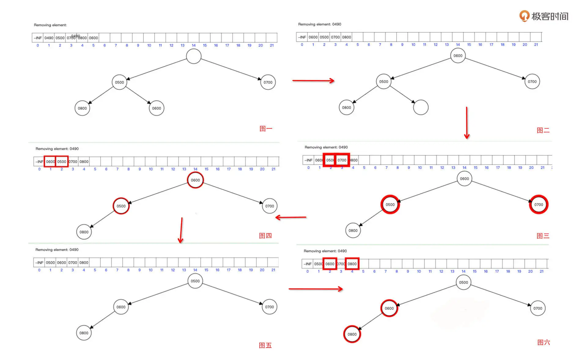
删除根节点和删除其他任何节点的算法是一样的：
首先，我们将待删除的位置的值清除，状态为图一。
然后，将数组最后的元素移动到待删除位置，我们用下标 n 表示。删除根节点，n 为 0，状态转为图二。
接下来，根据下标算法分别算出其子节点的下标为 2n、2n+1，从左右节点中挑选最小值，如图三。
用父节点的值与左右子节点中最小的值进行对比，如图四。如果父节点比最小子节点大，则交换两者的值，如图五。
我们要一直往下递归，直到节点没有子节点，或者没有父节点比子节点小为止。
结合这张图，我们同样来看一下 PriorityQueue 中删除元素的代码：
private void siftDown(int k, E x) {
if (comparator != null)
siftDownUsingComparator(k, x);
else
siftDownComparable(k, x);
}
@SuppressWarnings("unchecked")
private void siftDownComparable(int k, E x) {
Comparable<? super E> key = (Comparable<? super E>)x;
int half = size >>> 1; // loop while a non-leaf
while (k < half) {
int child = (k << 1) + 1; // assume left child is least
Object c = queue[child];
int right = child + 1;
if (right < size &&
((Comparable<? super E>) c).compareTo((E) queue[right]) > 0)
c = queue[child = right];
if (key.compareTo((E) c) <= 0)
break;
queue[k] = c;
k = child;
}
queue[k] = key;
}
可以看到，在这段代码中，我们设定 half 为 size 的一半，如果下标大于 half，则下标对应的位置不会再有子节点，可以跳出循环。
代码的第 12 行是计算左右节点下标的公式，我们可以按照公式算出左右节点的下标，并比较两者的大小，挑选更小的值与父节点进行对比。
最后，我们再来看一下优先级队列的应用场景。其实，JUC 中的定时调度线程池 ScheduledExecutorService 的底层就使用了优先级队列。
定时任务调度线程池的基本实现原理是：
在将调度任务提交到线程池之前，首先计算出下一次需要执行的时间戳，通过时间戳来计算优先级，将其存入最小堆中，这样就确保了最先需要执行的调度任务位于最小堆的顶部 (也就是根节点)。
然后开一个定时任务，拿队列中第一个元素和当前时间进行比较：
- 如果下一次执行时间大于等于当前时间，则将队列中第一个元素 (调度任务) 从队列中移除，投入线程池中执行。
- 如果下一次执行时间小于当前时间，则不处理，因为队列中最小的待执行任务都还没有到执行时间，其他任务一定也是这样。
可以看到，定时调度场景的关键是找到第一个需要触发的任务，类似 SQL 中的 min 语义，重在优先二字，而优先级队列的实现原理同样注重优先。理念上的契合让定时任务调度和优先级队列经常绑定在一起出现。
总结
好了，这节课就讲到这里。内容比较多，但是把脉络拎出来，其实我们主要讲了三种数据结构。
其中，树是数据结构中比较难但同时也非常常见的一种数据结构。我们从二叉排序树的优劣势出发，引出了红黑树，并用图解的方式详细介绍了红黑树的构建过程，介绍了红黑树的左旋、右旋、变色方法，还列举了红黑树的经典应用场景。
紧接着我们介绍了 LinkedHashMap，它是链表与 HashMap 的结合体。LinkedHashMap 既拥有 HashMap 快速的检索能力，还引入了节点顺序性，可以基于它实现 LRU 缓存淘汰算法。
最后，我们还通过图解认识了优先级队列，看到了用数组存储树的高阶用法，以及堆排序的工作机制和应用场景。
希望你能够借这个机会再巩固一下自己的基础知识，有所收获。同时，我也建议你在学完这些数据结构基本原理之后，有针对性地阅读一下源码，提炼出自己的学习方法。
课后题
最后我还是照例给你留两道课后题吧！
1、请你根据红黑树的特性，实现一棵红黑树（插入、删除、查找）。
2、红黑树和最小堆之间有什么区别，各自适用于什么场景？
欢迎你在留言区与我交流讨论，我们下节课见！
© 2019 - 2023 Liangliang Lee. Powered by gin and hexo-theme-book.